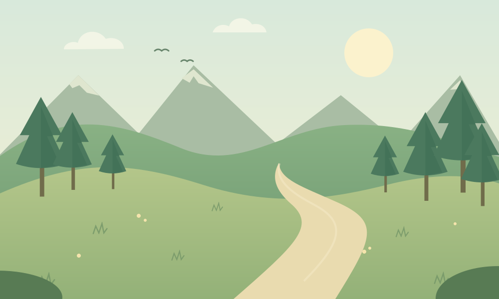
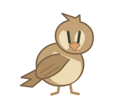
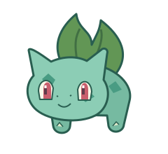

✦ UM NOVO CAPÍTULO COMEÇA AQUIPequenos passos.
Pequenos passos.
Grandes aventuras.
Todo grande treinador começa com um amigo.
Escolha seu primeiro Pokémon e siga a trilha.

⌖
A natureza está chamandoO começo de tudoRota 01 · Um mundo para descobrir
☀ 24°SEU PRIMEIRO COMPANHEIRO
Escolha o Pokémon que combina com você ↓Uma escolha. Uma amizade.
01 Escolha seu parceiro02 Explore e batalhe03 Cresçam juntos Progresso salvo automaticamente
SUA JORNADA, UM TURNO DE CADA VEZ
⌖ ROTA 01 Prado VerdeUm encontro na trilha.
EXPLORANDO☀ CÉU LIMPO
SELVAGEM


✦
PRONTO PARA EXPLORAR?
✧